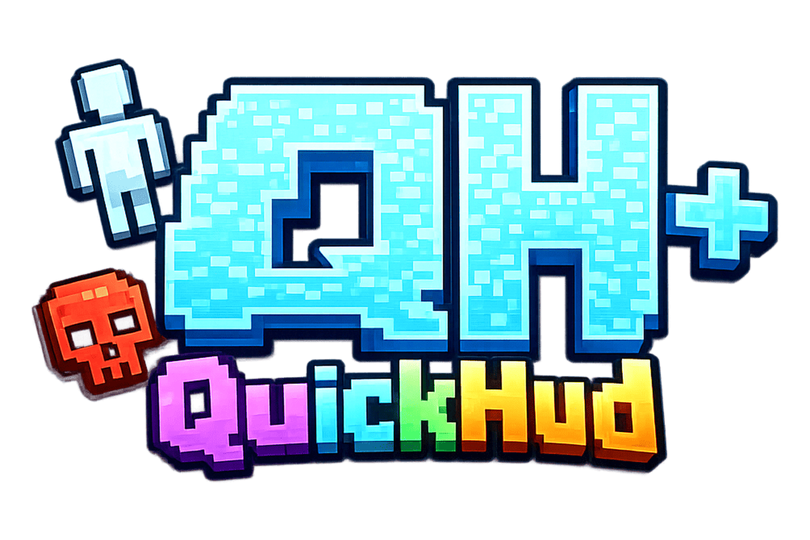
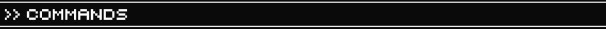
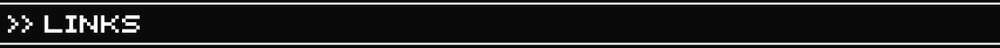

Que muestra
QuickHud puede mostrar contador de jugadores vivos, kills por jugador, timer, coordenadas XYZ y lista de equipos.
Players
Kills
Timer
Coords
Team

QuickHud WikiMod / Plugin
HUD personalizable para Minecraft: muestra jugadores vivos, kills, temporizadores, coordenadas y equipos. Puede usarse en cliente, servidor o con ambos juntos.
HUD ligero para mostrar informacion clara en pantalla sin depender del chat.
QuickHud puede mostrar contador de jugadores vivos, kills por jugador, timer, coordenadas XYZ y lista de equipos.
El mod puede estar en cliente y servidor. Con el plugin QuickHudPL el servidor puede controlar el HUD para todos; usando solo el mod tambien puedes tener un HUD local.
Elige el archivo segun donde lo quieras usar: mod para Fabric, Forge o NeoForge; plugin QuickHudPL para Bukkit, Paper, Purpur o Spigot.

Comandos principales para mostrar, ocultar, mover, escalar y actualizar elementos del HUD.
/hud show <element> [position] [scale] [@a|player|team <name>]
Muestra un elemento del HUD para todos, un jugador o un equipo.
/hud hide <element> [@a|player|team <name>]
Oculta un elemento especifico del HUD.
/hud pos <element|all> <position>
Cambia la posicion de un elemento o de todos.
/hud scale <element|all> <value>
Ajusta el tamaño visual de uno o todos los elementos.
/hud kills set|add|reset <amount> [@a|player|team <name>]
Controla el contador de kills por jugador, selector o equipo.
/hud timer start|pause|resume|reset <seconds> [@a|player|team <name>]
Maneja temporizadores para eventos, minijuegos o rondas.
/hud text set <position> <text>
Muestra texto personalizado en una posicion del HUD.
/hud reset [@a|player|team <name>]
Restablece el HUD del objetivo seleccionado.
Puntos disponibles para ubicar elementos en pantalla.
Compatibilidad indicada en Modrinth, revisada el 4 de mayo de 2026.
Guia simple para empezar como en la pagina del proyecto.
/hud show players top_left 1 @a./hud timer start 300 @a./hud reset @a.
Accesos rapidos a las paginas principales del proyecto.